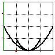

Geometrische Eigenschaften der Kettenkurve
Es ist klar, dass die Kettenkurve nicht vom spezifischen Gewicht der Kette (pro Längeneinheit) abhängt. Schliesslich werden sich zwei Ketten nicht anders aufhängen, wenn ich sie gemeinsam aufhänge.
Die Kettenkurve hängt aber, bei gegeben Aufhängepunkten von der Länge der Kette ab.
Wenn wir nun eine kleinere Kette aufhängen und vergrössern das Bild dieser kleineren Kette in jeder Richtung auf das doppelte, so sollte dies die Kettenkurve einer doppelt so langen Kette sein. Man muss dies allerdings genau begründen. Als Argumentation dient hierbei, dass sich auch die inneren Kräfte, die in der Kette herrschen, genau verdoppeln.
 Ist diese geometrische Eigenschaft bei der Parabel gegeben? In der Tat rechnet man leicht nach, dass eine in jeder Richtung um den Faktor a gestreckte Parabel wieder eine Parabel ist. Auf diese einfache geometrische Weise lässt sich also die Parabel als Kettenkurve nicht entkräften.
Es wäre daher interessant nachzuforschen, wie Huygens die Parabel als mögliche Lösungskuve ausschloss.